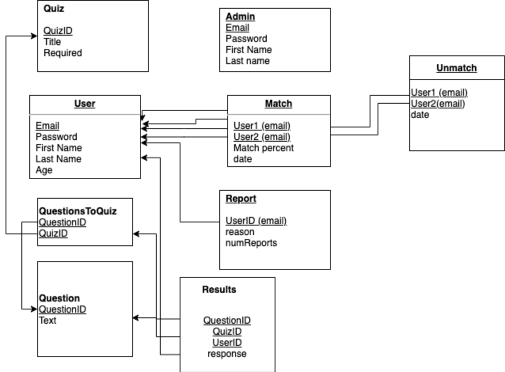
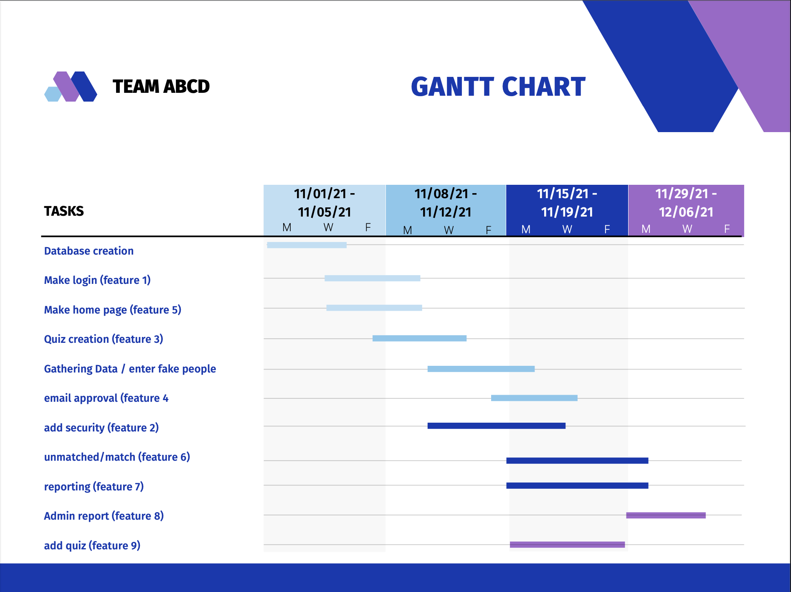

Project Proposal
Section I: Introduction
Description paragraph here
Section II: Product Features
- Feature 1: Customers can login to our system with a username and password, which are both encrypted in the database. The username will be an email address, which will be unique. The login form has a checkbox option to “Remember me today.” If this option is checked upon a successful login, the website will remember them for a 24-hour period (without requiring login if they leave and return to the site later). If not checked, the site will only remember them for a 1-hour period.
- Feature 2: To provide added security, we will block out an account after 5 unsuccessful login attempts, after which the user must reset their password by following a link that is emailed to the address stored in the database for the given username. If people forget their password, they can have an email sent to their account that will allow them to update the password.
- Feature 3: Customers are directed to take one or more matching quizzes. The quiz results are used to match them with the most compatible person in the database. Customers need to take at least one quiz before they can be matched. Upon matching, customers are given the email address of their match.
- Feature 4: Before matching with someone, a customer must approve the sharing of their email address. Upon matching, their email will be shared as well as the data from their quizzes. The information will be shared both ways.
- Feature 5: Customers will see a list of all matches on their screen when they login. This list will be ranked from highest match to lowest match. Customers have the option to filter out any matches below a certain percentage, or any matches that were matched before a certain date.
- Feature 6: Customers can select not to be matched with their previous matches a second time when retaking the quizzes. They can also click a “new match button” to get the next most compatible person. If there are no more people compatible in the database they will get a message saying there are no good matches at this time.
- Feature 7: Users also have the option to report users. Users who are reported three times have their accounts deleted. They are removed from the dating website and their email will be unable to recreate an account.
- Feature 8: A company rep can generate a data report on users. The report shows: user, user quality statistics, quizzes taken, number of matches, profiles of their matches, and possibly a satisfaction rating.
- Feature 9: A company rep can add new quizzes to be made available to the customers. When adding the quiz, they must input all the possible quiz results and the compatibility between these quiz results.
Section III: Database Schema

- Relation_Name: description
- Relation_Name: description
- Relation_Name: description
- Relation_Name: description
- Relation_Name: description
- Relation_Name: description
Section IV: Project Management
List of Tools:
- Trello: project organization
